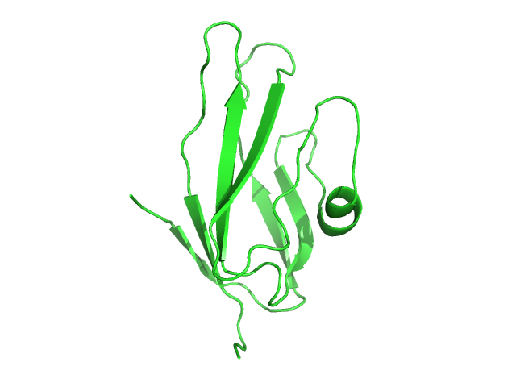
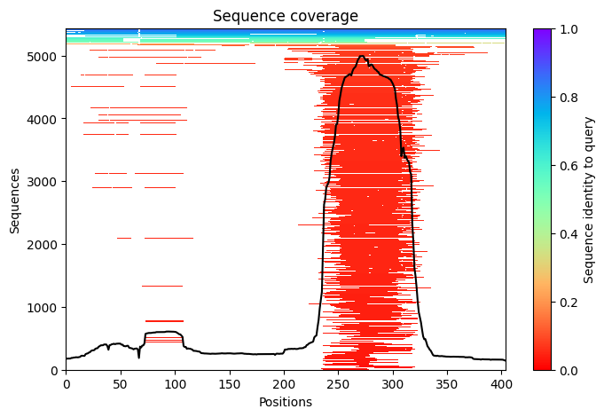
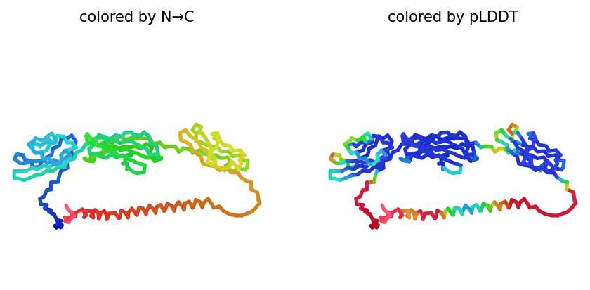
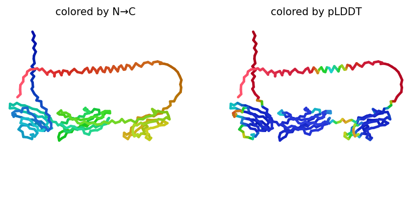
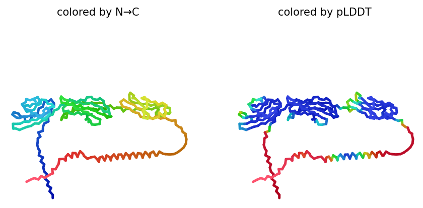
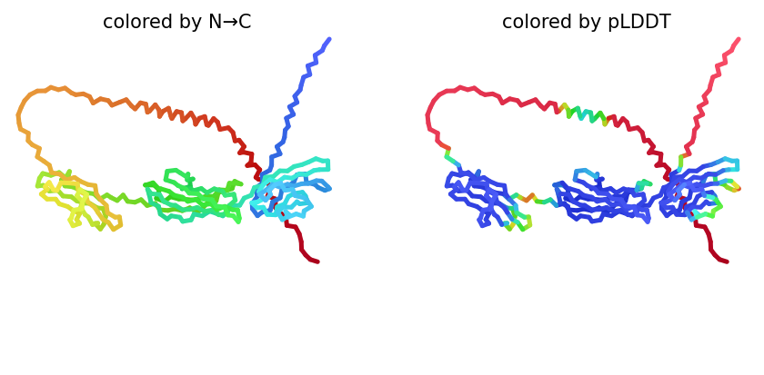
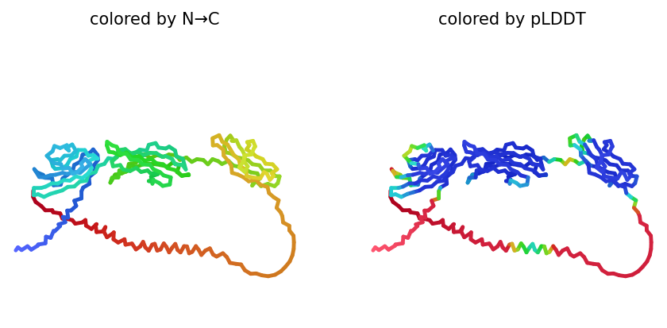

Sequence & protein
Retrieved protein identity, function, sequence and biological annotations.
UniProtBioinformatics / Protein Structure
Exploring the AGER protein using UniProt, Ensembl, ClinVar, PDB and AlphaFold2/ColabFold to connect sequence information, genetic variation and predicted protein structure.

Protein AGER
Organism Homo sapiens
UniProt Q15109
Length 404 aa
Overview
AGER, also known as the receptor for advanced glycation end products, is a cell-surface pattern-recognition receptor involved in inflammatory signalling. This project combined biological databases, API-based data retrieval and protein-structure prediction to build a connected view of the protein.
Workflow
Retrieved protein identity, function, sequence and biological annotations.
UniProtExplored transcripts, exons, gene location and genomic context.
EnsemblInvestigated missense variants and available interpretations.
ClinVarCompared experimentally determined structures and methods.
PDBGenerated ranked models and inspected prediction confidence.
ColabFoldProject video
A short walkthrough of the databases, notebook, structure prediction and key findings.
Structure visualisation
PyMOL cartoon representation from an experimentally available AGER structure.
Sequence coverage

Multiple-sequence-alignment coverage used by the structure-prediction workflow.
Predicted models





Demo code
import requests
from io import BytesIO
import pandas as pd
protein_accession = "Q15109"
response = requests.get(
f"https://rest.uniprot.org/uniprotkb/{protein_accession}.tsv"
)
uniprot_tsv = response.content
protein_df = pd.read_csv(
BytesIO(uniprot_tsv),
delimiter="\t"
)
print(protein_df)import requests
gene_name = "AGER"
server = "https://rest.ensembl.org"
endpoint = (
f"/xrefs/symbol/homo_sapiens/{gene_name}?"
)
response = requests.get(
server + endpoint,
headers={
"Content-Type":
"application/json"
}
)
gene_records = response.json()
print(gene_records)import requests
experiment_type = {}
for pdb_id in pdb_ids:
response = requests.get(
f"https://data.rcsb.org/rest/v1/core/entry/{pdb_id}"
)
if response.status_code == 200:
record = response.json()
experiment_type[pdb_id] = (
record["exptl"]
)
print(experiment_type)Key insights
Connected UniProt, Ensembl, ClinVar and PDB rather than treating each source in isolation.
Compared experimental evidence with computationally predicted models.
Used prediction confidence and sequence coverage to avoid overinterpreting uncertain regions.
Used Python, Requests, Pandas, Biopython, PyMOL and notebook-based workflows.